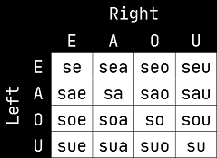

Introduction
eberban is a Lojban-inspired constructed language aimed at being simple, regular and expressive.
- Simple: eberban is made entirely out of predicates, which are manipulated with particles, following relatively few yet composable grammar rules.
- Regular: particles are organized into families, each with a unique prefix, enabling quick recognition and accelerating learning.
- Expressive: predicates are designed to be combined together to express complex meaning.
This book will provide a detailed tour of the language, covering its concepts and grammar.
Morphology
The morphology of eberban is composed of 16 consonants (n, r, l, m, p, b, f, v, t, d, s, z, c, j, g, k), 5 vowels (i, e, a, o, u) and finally the letter h, for a total of 22 letters. Among the consonants, n, r and l are designated as (alveolar) sonorants, and play an important role in eberban's morphology. The same letter appearing multiple times in a row is considered identical to the letter no being repeated.
Words are usually written separated by spaces, however this is not mandatory. While removing spaces it might however be required to add the word boundary marker symbol ' in some places. More than one marker in a row is not allowed.
Letters are chained one after the other without spaces to form words which are devided in multiple categories based on their structure.
Word types
Particles
Particles are words exerting grammatical functions. They starts with a single non-sonorant consonant, followed only by vowels and h, like pa, mio or tiho. Particles are themselves categorized into families having identical grammar but different meanings.
All other words are predicate words and express intrinsic meanings such as "cat", "language" or "teach". They are made of the following categories :
Roots
Roots are the building blocks of the language and express meanings that would be hard or too long to convey otherwise. They can either :
- start with a single non-sonorant consonant followed by a mix of vowels and at least one sonorant or medial consonant pair, like ban, mana, cuina or marne.
- start with a valid initial consonant pair followed by a mix of vowels and any number of sonorants or medial consonant pairs (even none), like bju, cpena or djin.
A sonorant can appear ony between 2 vowels or at the end of the root, while a medial pair can appear only between 2 vowels, but not at the end.
The following chart show initial pairs in blue, medial pairs in red, and invalid pairs in gray :

Borrowings
Borrowings allows to import foreign words or names. They are prefixed by the vowel u, and they may contain multiple non-sonorant consonants. Pairs of consonants must either be initial pairs, medial pairs or sonorant + consonant in any order, while triplets must be either be a sonorant followed by an initial pair, or the first 2 consonants being a medial pair while the last 2 are an initial pair.
Borrowings must end with a vowel which can be followed by a single sonorant. In written media borrowings must be followed by either spaces or a word boundary marker, while in oral speech either the penultimate vowel must be stressed, or the word is not stressed and ends when a pause occurs. Similarly, the initial u must be either preceded by spaces or a word boundary marker, and realized oraly as either a pause or a glotal stop.
Examples with stressed vowel in italics : udjonatan, ubar.
Assignable names
Assignable names allows to define predicate with a custom name. They follow the same morphology as borrowings but uses the i prefix instead of u.
Compounds
Compounds allows to make new words from multiple other kind of words. They start by either e, a or o and follow the same rule as the u of borrowings. Their structure will be detailed later in this book.
Example
With spaces : pa za umia tsen eberban
Without spaces : paza'umia'tsen'eberban
Particles : pa, za
Borrowing : umia
Assignable name: abar
Root : tsen
Compound : eberban
Reasoning
Outside of borrowings and assignable names, encountering a non-sonorant consonant or a word boundary marker means it is the start of a new word; unless it the first letter of a medial consonant pair which cannot be misunderstood as the start of a new word. Word boundary markers or spaces before vowel-initial words allow to prevent them from "merging" into the previous word. The end of borrowings can easily be recognized with the suffixed space or marker, or stress in speech.
These simple rules prevent any ambiguity of words boundary, which is called a Self-Segregating Morphology.
Phonology
| Letter | IPA | Description |
|---|---|---|
| h | [h] | an unvoiced glottal spirant |
| n | [n], [ŋ] | a voiced dental or velar nasal |
| r | [r], [ɹ], [ɾ], [ʀ], [ʁ] | a rhotic sound |
| l | [l] | a voiced lateral approximant |
| m | [m] | a voiced bilabial nasal |
| p | [p] | an unvoiced bilabial stop |
| b | [b] | a voiced bilabial stop |
| f | [f] | an unvoiced labiodental fricative |
| v | [v] | a voiced labiodental fricative |
| t | [t] | an unvoiced dental/alveolar stop |
| d | [d] | a voiced dental/alveolar stop |
| s | [s] | an unvoiced alveolar sibilant |
| z | [z] | a voiced alveolar sibilant |
| c | [ʃ], [ʂ] | an unvoiced coronal sibilant |
| j | [ʒ], [ʐ] | a voiced coronal sibilant |
| k | [k] | an unvoiced velar stop |
| g | [ɡ] | a voiced velar stop |
| i | [i] | a front close vowel |
| e | [ɛ], [e] | a front mid vowel |
| a | [a], [ɑ] | an open vowel |
| o | [o], [ɔ] | a back mid vowel |
| u | [u] | a back close vowel |
The word boundary marker ' is usually realized as a pause. However other realizations are allowed to improve the flow of speech :
- Before a vowel-initial word (borrowing, freeform variable and compounds) it can be realized as a glotal stop [ʔ] instead.
- While usually borrowings are unstressed and ends when a pause occurs, it is possible to stress its penultimate syllable/vowel, and thus not having to pause after it. In general speakers must take care of not using stress in borrowings outside of the penultimate syllable to avoid ambiguities, even if the borrowed word in the source language is stressed in some way.
Consecutive vowels are separated by hiatuses, but glides like [j] and [w] are allowed respectively alongside or instead of [i] and [u] unless it is part of a stressed syllable.
Where spaces are allowed, a speaker or writter can express hesitation by using one or more letter n surrounded by spaces, and realized as [n̩].
In speech the schwa sound [ə] can be used in between consonants of a pair if the speaker have trouble to utter the pair as-is. It have no written equivalent.
Example
Sentence : pa za umia tsen eberban
Pronounciation : [pa za ʔu'mi.a tsen ʔeberban]
Proposition and predicates
eberban grammar is based around Second-Order Logic (SOL) and tries to stay pretty close to it while still being easy to use by humans.
Let's first start with some english sentences such as :
- "A cat sleeps."
- "You eat an apple."
These are statement about something being true (or false), and are called propositions, which are made of a subject ("A cat"/"You") and a verbal clause ("sleeps"/"eat an apple"), itself being composed of a verb ("sleeps"/"eat") and optionally one or more objects (none/"an apple"). The verb is describing something about the subject and objects.
In eberban the equivalent of a verb is called a predicate, which can be
seen as a proposition template with open blanks for the things it describes.
The verb "eat" could thus be expressed as a predicate as _ is eating _,
the first blank _ representing what/who is eating, while the second blank
represents what is being eaten. The second verb can be expressed similarly
as _ is sleeping. These blanks are called argument places.
To get closer to eberban sentences, we need to do a small trick with the subject
and objects. Indeed, "a cat" is pretty much equivalent to "something which is a
cat", "you" to "something which is you", etc. With that form we can see that
those can also by expressed using predicates such as _ is a cat,
and say that :
- [something-1 is a cat] AND [something-1 sleeps]
- [something-2 is me] AND [something-2 eats something-3] AND [something-3 is an apple]
These "somethings" are called individual variables and are managed by the eberban grammar, and we'll write them in glosses as letters such as $(x) or $(y) to keep things short.
To be more precise, eberban individual variables are plural. It means that they represent "one or more things", and a more precise amount (such as singular) can be expressed using other predicates. Also keep in mind that by default no tense is implied, meaning the sentence can either be true in the past, the present or the future. Again, predicates allow to narrow down the meaning.
To keep glosses simple, singular and present will be used for the general case unless stated otherwise.
Definitions of eberban predicate words are like this :
- mian:
(Ed) is a cat. - minu :
(Ed) sleeps.
(Ed) represents an argument place. The uppercase vowel in parenthesis can
be either E, A, O or U, designating respectively a 1st, 2nd, 3rd and 4th
place. These vowels are used in multiple particle patterns to refer to these
places. While the exact meaning of the lowercase d (or c) will be
explained in a future chapter, for now the most important is that it
is an individual place.
When multiple predicate words are chained one after the other, their E individual places are the same thing(s), while any other place will have its own variable.
mian minu
mian minu
{[E:$(x) is a cat]} {[E:$(x) sleeps]}
A cat sleeps.
Here are the definitions to translate the other sentence :
- mo :
(Ed) is you, a listener. - buri :
(Ed) eats [Ad]. - menoe :
(Ed) is an apple.
Here buri has an A place in brackets. Predicates having this are called switch predicates as they switch which individual variable is carried on to the next predicate.
mo buri menoe
mo buri menoe
{[E:$(x) is you]} {[E:$(x) eats A:$(y)]} {[E:$(y) is an apple]}
You eat an apple.
Note : some predicates have an A places that are not in brackets and thus are not switch predicates. This is often used when places besides E are not very important, and carrying the E place individual variable is more relevant.
Multiple switch predicates can be used in the same sentence :
- mi :
(Ed) is I/me/a speaker/author. - viru :
(Ed) sees [Ad]. - bri :
(Ed) (default: speaker) is above/upward/up from [Ad] (default: speaker). - kcaro :
(Ed) is a table.
mi viru menoe bri kcaro
mi viru menoe bri kcaro
{[E:$(x) is me]} {[E:$(x) sees A:$(y) ]} {[E:$(y) is an apple]} {[E:$(y) is above A:$(z)]} {[E:$(z) is a table]}
I see an apple above/on a table.
Note : Some predicates like bri specifies a default value. This value is used when its individual variable is not shared with another predicate in the sentence. If kcaro was absent from the previous sentence, $(z) would not be shared and the sentence would mean "I see an apple above me". This allow to provide a better default than any "something".
Explicit switches
SE prefix
As said in the previous chapter, predicates can have more places than just E and A, such as van :
- van:
(Ed) goes to [Ad] from (Od). - spur :
(Ed) is a nest/house/home for [Ad]. - peol:
(Ed) is a town/city.
mi van spur mo
mi van spur mo
{[E:$(b) is me]} {[E:$(b) goes to A:$(c) from O:$(c)]} {[E:$(c) is a house for A:$(f)]} {[E:$(f) is you]}
I go to a house of yours.
We can prefix a predicate by particle of family SE (composed of all particles starting with s). The first vowel specifies the place (E, A, O, U) to chain on the left side, while the second vowel specifies the place on the right side. If both vowels are the same, because doubled vowels are not permitted in eberban, they are merged into one vowel. This results in the following table:

mi seo van spur mo
mi seo van spur mo
{[E:$(b) is me]} {<EO>} {[E:$(b) goes to A:$(c) from O:$(d)]} {[E:$(d) is a house for A:$(f)]} {[E:$(f) is you] 〉}
I go from a house of yours.
Non switch predicates thus behave like if they were prefixed by se, while switch predicates behave life if they were prefixed by sea.
VE/FE suffix
However, simply chaining predicate words one after the other, with or without SE, will not allow to use more than 2 places.
Another way to explicitly switch is to use families VE, VEI and FE.
The VE particle family contains all particles starting with v, except vei which is the only member of family VEI. All particles of the FE family starts with f.
VE can be used after a predicate word to choose which place to switch
to, and also start what is called a VE-scope, which we'll write using
angle brackets 〈 〉 in the glosses.
ve switches to the E place, va to the A place, vo to the O place and finally vu to the U place.
mi van vo spur mo
mi van vo spur mo
{[E:$(b) is me]} {[E:$(d) goes to A:$(c) from O:$(d)]} {〈 switch to O:$(d)} {[E:$(d) is a house for A:$(f)]} {[E:$(f) is you] 〉}
I go from a house of yours.
However, VE alone is not enough to switch later to another place of van, as using another VE would switch to a place of the predicate immediatly before it instead. FE, on the other hand, will switch to a place of the same predicate as the VE starting the current VE-scope. Members of FE are the same as the members of VE but with the v replaced by f.
mi van vo spur mo fa peol
mi van vo spur mo fa peol
{[E:$(b) is me]} {[E:$(b) goes to A:$(c) from O:$(d)]} {〈 switch to O:$(d)} {[E:$(d) is a house for A:$(f)]} {[E:$(f) is you]} {switch to A:$(c)} {[E:$(c) is a town] 〉}
I go from a house of yours to the town.
The order of the explicit switches are irrelevant :
mi van va peol fo spur mo
mi van va peol fo spur mo
{[E:$(b) is me]} {[E:$(b) goes to A:$(c) from O:$(d)]} {〈 switch to A:$(c)} {[E:$(c) is a town]} {switch to O:$(d)} {[E:$(d) is a house for A:$(f)]} {[E:$(f) is you] 〉}
I go to the town from a house of yours.
Finally, VEI allows to explicitly close the current VE-scope, switching back to the normal place individual variable explained in the previous chapter or defined by SE.
mi van vo spur mo vei peol
mi van vo spur mo vei peol
{[E:$(b) is me]} {[E:$(b) goes to A:$(c) from O:$(d)]} {〈 switch to O:$(d)} {[E:$(d) is a house for A:$(f)]} {[E:$(f) is you]} 〉 {[E:$(c) is a town]}
I go from a house of yours to the town.
While in simple sentences like this one it is equivalent to using the proper FE, VEI can be necessary when dealing with multiple nested VE-scopes.
Nested VE-scopes can become a bit overwelming if they are too long or to many. We'll see in a subsequent chapter how to avoid them and keep sentences simple.
Predicate places
Let's look at the definitions of some eberban words :
- djin:
(Ed) desires/wants/wishes [A0]. - kre:
(Ed) helps [Ad] to satisfy property (O1). - kini:
(Ed) learns/studies fact [A0] about (Od). - jvin:
(Ed) dances. - eberban:
(Ed) is the eberban language.
The number next to the uppercase vowel indicates it is a predicate place, the number being the amount of arguments. This number is called the arity of places and predicates.
mi djin mi jvin
mi djin mi jvin
{[E:$(b) is me]} {[E:$(b) wants A:$(C)]} {$(C) = [E:$(d) is me]} {[E:$(d) dances.]}
I want that [Me dancing] is true/occurs. I want to dance.
If this number is greater than 0, it will correspond to the places of the next predicate in order :
mi kre va mo fo kini vo eberban
mi kre va mo fo kini vo eberban
{[E:$(b) is me]} {[E:$(b) helps A:$(c) to O:$(D)]} {〈 switch to A:$(c)} {[E:$(c) is you]} {switch to O:$(D)} {O:$(D)($(f))) = [E:$(f) learns A:$(g) about O:$(h)]} {〈 switch to O:$(h)} {[E:$(h) is eberban] 〉 〉}
I help you to learn something about eberban.
SE could be used before kini to change which place would be used as an argument of $(D). However choosing a place outside of the first predicate requires more advanced grammar that will be explained in a later chapter.
Discourse predicates
The MI particle family contains all particles starting with m. They have the same usage as roots and contains predicates related to the discourse itself.
Pronouns
The following particles are similar to pronouns in other languages :
- mi :
(Ed) is I/a speaker/author.Remember that individual variables are plural and thus could refer to multiple speaker or authors. - mo :
(Ed) is you, a listener. - mio :
(Ed) is I/a speaker/author or you, a listener.(inclusive we) - mie :
(Ed) is I/a speaker/author or someone that is not a listener.(exclusive we) - me :
(Ed) is someone, neither a speaker or listener.Note that using me multiple times doesn't imply it is the same person(s). Refering to the same person or things will be explained in a later chapter. - mei :
(Ed) is this here, near a speaker. - meo :
(Ed) is that here, near a listener. - meu :
(Ed) is that yonder, far from speaker and listener.
Specificity
By default, individual variables can be anything in the universe that satisfies the predicates they are used with. mai and mao can be used to restrict them to specific individuals the speaker have in mind :
- mai :
(Ed) is indefinite specific.The listener is not expected to know which one. - mao :
(Ed) is definite specific.The listener is expected to know which one from context.
Propositions
It is often useful to be able to speak about propositions. The following particles are 0-ary predicate (they have no places).
- mua :
States the last/previous proposition. - mue :
States the proposition (0-ary scope) in which this one is embeded.This takes into account sentences and any time there is chaining/VE with a proposition (0-ary) place. - mui :
States the current proposition.Same logic as mue. - muo :
States the next proposition.
mua, mue and muo use the first closest proposition that matches this description. To refer the second or others, indices (explained in the Free modifiers chapter) must be used.
Others
ma have definition (Ed) exists.. It may seem useless as it doesn't add
any restriction to the individual variables, however it may be used with VE to
better control the scope of existentiality claims, or take advantage of how
inexistant places are handled by the chaining system. Th
mau have definition (Ec) is not bound outside of this scope. It can be
used in definitions to define "default values" and its usage will be explained
in a later chapter.
Borrowings
Borrowings allows to import words from other languages which would be difficult or even impossible to translate using root words, such as proper names, names of species, and some cultural concepts eberban avoids to include in its roots to be more culturaly neutral.
A borrowing starts with the letter u, followed by the borrowed word writen in the phonology and morphology allowed by eberban while trying to stay close to the original pronounciation.
If the borrowed word start with u then the prefix is u' to avoid 2 consecutive u.
A chain of multiple borrowings will count as only one predicate composed of multiple parts. To prevent 2 borrowings to fuse into one predicate, you can separate them with the particle be (be can optionaly appear after every borrowing group but is only necessary when separating multiple groups).
Their definition is (Ed) is a [borrowed word].. Having a generic place
structure makes comprehension easier form a listener or reader who might not
be familiar with the borrowed word.
The borrowing can be prefixed by the particle za to transform it into
a proper name with definition (Ec) is named [borrowed word]. A more complete
explanation of za will be provided in a later chapter.
Example
- tsen:
(Ec) invents/creates/authors [Ad].
za umia uentropi tsen eberban
{za umia uentropi} tsen eberban
{[E:$(x) is named "mia entropi"]} {[E:$(x) creates A:$(y)]} {[E:$(y) is eberban]}
"mia entropi" creates eberban.
Text structure
An eberban text is organized as a list of paragraphs, which are themselves a list of either sentences or definitions.
Paragraphs
The start of a paragraph is marked with the particle family PU, containing all particles starting with pu. While pu indicates a new paragraph, a change of topic, the particles pua, pue, pui and puo indicates increasingly large changes of topic, similar to subsections, sections, chapters, etc. The marker of the first paragraph of a text is optional, and if missing is infered to be pu.
Sentences
The start of a sentence is marked with the particle family PA, containing all particles starting with pa expect pai which is in its own PAI family. PA contains these members :
- pa : assertive sentence, that can be believed or disbelived, and is either
- pae : vocative sentence, defines the listener as the first variable of the scope.
- pao : declarative sentence, that is true only because uttered (used for declarations, announcements, etc)
- pau : directive sentence, that is requested, wished or ordered to be true.
With pae it is possible to choose a variable which is not the first of the sentence. This will be explained in a later chapter.
The marker of the first sentence of a paragraph is optional, and if missing is infered to be pa. Sentences are also optionally terminated by PAI, which is almost always elided.
pae za umari
pae {za umari}
{[vocative: $(x)]} {[E:$(x) is named "mari"]}
I'm talking to you "mari".
pao sni mo
pao sni mo
{[declarative]} {[E:$(x) welcomes A:$(y)]} {[E:$(y) is you]}
(I declare that) You are welcomed.
pau keur mo minu
pau keur mo minu
{[directive]} {[E:$(X) begins to occur]} {$(X) = [E:$(y) is me]} {[E:$(y) sleeps]}
(I request that) Now is the begining of you sleeping.
Definitions
Definitions are started by the particle family PO, containing all particles starting with po, except poi which is in its own POI family and act an elidable terminator for definitions. Definitions will be explained in details in a later chapter.
Compounds
Providing a root for every concept would be extremely impractical. Complex concepts are often built upon multiple more primitive concepts, and compounds are used for this purpose.
Compounds allow transforming any string of valid eberban words (particles, roots , borrowings, and even other compounds) into a single unit, ignoring their grammatical rules but keeping (to a certain extent) their meaning.
A compound is first prefixed by the letter e, a, o, respectively starting a compound composed of 2, 3, or more words. O-compounds stops when a new o is encountered (with space or word boundary marker before it). Spaces can be inserted between any parts of the compound.
If the first word starts with a vowel (a borrowing) then the pause before this vowel is optional.
A compound have a unique, fixed meaning which is defined in the dictionary, and while its definition can be arbitrary, it usually provides places taken from its individual components. Usually the most important word is the rightmost one, and additional words are added to the left to help narrow down the meaning, yielding greater precision.
It is common to lexicalize a borrowing by making a compound with it. Cultural concepts are borrowed with endonyms, sounding similar to the original word.
e ber ban :
(Ed) is the eberban language.
- ber :
(Ed) reflects this language (eberban).- ban :
(Ed) is expressed in language [Ad].
e ufranse ban :
(Ed) is the french language.
- ufranse : borrowing of "french" ("français" in french).
- ban :
(Ed) is expressed in language [Ad].
a cen po bu :
(Ed) is a dictionary.
- cen :
(Ed) is a word.- po : Particle starting a definition.
- bu : Particle allowing to create lists.
Quotes
ca (CA family) allow quoting any grammatical eberban text, and is
terminated by cai (CAI). This text can itself contain inner ca
quotes as cai will match its opeing ca. The quote acts as a predicate
with definition (Ed) is text [text].
ce (CE) allows quoting a single eberban word (particle, root, borrowing,
compound), ignoring its grammar. It has definition (Ed) is word [word].
cei will insead express the family of the word.
- ce fe :
(Ed) is the word "fe". - cei fe :
(Ed) is word family FE. - ce spi:
(Ed) is the word "spi". - cei spi:
(Ed) is a root word.
co (CO) allows to quote anything such as foreign text, ungrammatical
eberban text or even arbitrary data. co is followed by a single arbitrary
root or particle, which has the role of a delimiter (it must no necessary be an
existing particle or root, only a valid form), followed by a space. Any
additional space is considered part of the quoted text. The quote ends when this
word appear again prefixed by a pause character in written media, and with a
pause before it in speech, and both are not part of the quoted text. The
delimiter word prefixed by a pause must not appear in the text, either written
with same letters or pronounced the same way, as it could lead to ambiguities
regarding where the quote ends. This block acts as a predicate with definition
(Ed) is foreign text/arbitrary data [content].
As the content may be unreadable for the speaker, he is free to pronounce only the enclosing delimiter while skipping the content. Foreign quotes are the canonical way to embed things such as images or URLs into eberban text. It is recommended however to provide a description in eberban to help comprehension for all speakers, listeners or readers.
eberban ca mi don eberban cai siro euinglici'ban co zao I like eberban.'zao
(in eberban) "mi don eberban" has translation (in english) "I like eberban.".